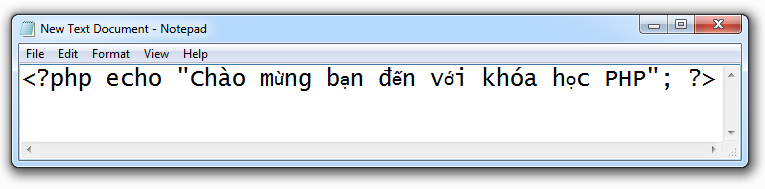
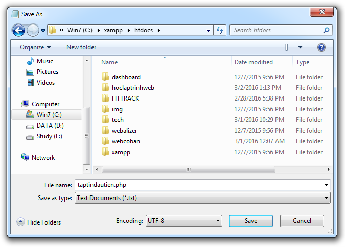

Cách tạo và chạy một tập tin PHP
1) Cách tạo một tập tin PHP
- Để tạo một tập tin PHP thì bạn thực hiện lần lượt các bước sau:
- Bước 1: Mở Notepad lên và gõ vào đó một đoạn mã PHP như sau.

- Bước 2: Lưu tập tin.
- Bấm vào tab File rồi chọn Save As
- Chỗ Encoding chọn UTF-8
- Lưu tập tin theo đường dẫn C:\xampp\htdocs và đặt tên là taptindautien.php
- Cuối cùng, bấm nút Save để lưu tập tin.

2) Cách chạy một tập tin PHP
- Để chạy (thực thi) tập tin PHP được tạo ở phần hướng dẫn phía trên, ta thực hiện lần lượt các bước như sau:
- Mở trình duyệt web lên.
- Gõ vào thanh địa chỉ dòng chữ localhost/taptindautien.php rồi nhấn Enter.
- Nếu trình duyệt hiển thị giống như hình bên dưới thì tức là bạn đã chạy thành công tập tin PHP.
3) Cách tạo và chạy tập tin PHP trong thư mục con
- Chúng ta có thể lưu các tập tin PHP vào những thư mục con trong C:\xampp\htdocs để tiện cho việc phân cấp và quản lý thư mục.
- Còn để chạy tập tin PHP được lưu trong thư mục con thì sử dụng cú pháp như sau:
- Ví dụ 1: Để chạy tập tin được lưu ở địa chỉ C:\xampp\htdocs\laptrinhweb\bai1.php thì ta truy cập đường dẫn localhost/laptrinhweb/bai1.php
- Ví dụ 2: Để chạy tập tin được lưu ở địa chỉ C:\xampp\htdocs\laptrinhweb\hocphp\bai2.php thì ta truy cập đường dẫn localhost/laptrinhweb/hocphp/bai2.php
4) Tóm tắt một vài nội dung quan trọng
- Một tập tin PHP phải có phần mở rộng (đuôi) là .php
- Để tiện cho việc học tập thì từ nay về sau, các tập tin như HTML, CSS, JavaScript, PHP cần phải được lưu trên máy chủ web của máy tính với đường dẫn là C:\xampp\htdocs hoặc bên trong các thư mục con của đường dẫn đó.
- Để thực thi một tập tin PHP thì ta mở trình duyệt và truy cập đường dẫn với cú pháp: